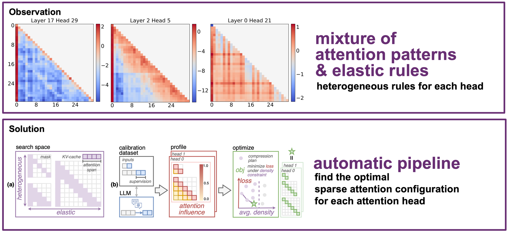
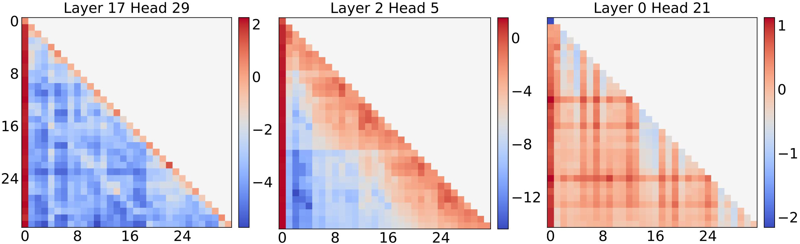
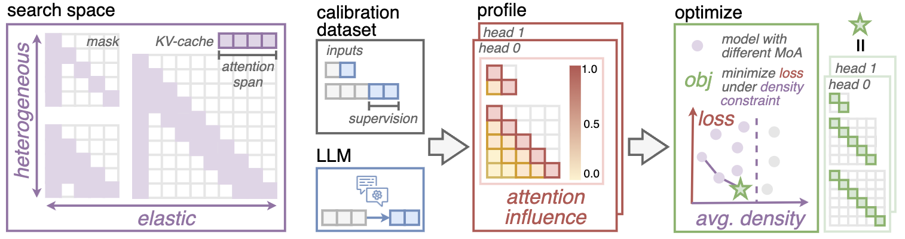
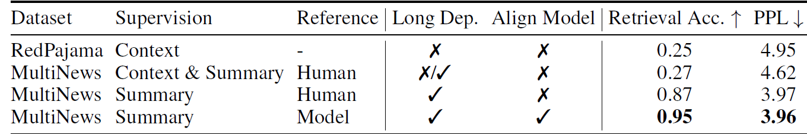

Optimizing LLM Inference Efficiency with Heterogeneous Sliding-Window Lengths.
Overview
Uniform sliding windows give every head the same local budget. MoA assigns each head its own elastic span rule so local heads stay cheap and global heads keep enough context.
Uniform spans misallocate budget. Some heads mainly need local context, while others require broad context to preserve retrieval and understanding.
MoA searches per-head elastic rules. Attention span becomes a head-specific function of input length under a target density constraint.
The method is training-free. A calibration pass profiles attention influence, then an optimizer selects the best heterogeneous span plan.

The Discovery
Profiling pre-trained LLMs reveals two facts about attention heads. Together they explain why a single uniform sliding window cannot serve a whole model.
At a fixed input length, some heads concentrate in a narrow band near the diagonal, while others spread across the entire input. A uniform window truncates the global heads and breaks long-range retrieval, yet still overspends compute and KV-Cache on the local ones. Matching each head to its own span raises content retrieval accuracy from 25% to 98%.

At short lengths, many heads look identically dense, and the difference only appears once the input stretches. Some heads keep a fixed local span no matter how long the input gets, while others expand in proportion to it. MoA models each head's span as a linear rule S = α + β · N and searches α and β per head.
S = 1.6k (β = 0)
40% of input
S = 5.6k (β = 0)
100% of input
S = 0.9 · N (β > 0)
90% of input
Illustrative N×N causal attention matrices. Blue cells are kept by each head's rule; faint cells are masked. Heads B and C look alike at 4k. By 16k, one has stayed put while the other has kept growing.
Method
MoA constructs a search space of elastic span rules, profiles attention influence on long-context calibration data, and selects the optimal rule for each head.

Each attention head selects from rules that map input length to a hardware-friendly sliding-window span.
First-order gradient profiling estimates how masking attention positions changes the prediction loss.
A density-constrained optimizer finds the best per-head plan, then validates it at an unseen sequence length.
Calibration
MoA profiles on long summaries and uses the dense model's own output as the reference, so gradients track the behavior compression must preserve.
Summaries depend on evidence across documents.
Compute loss on the generated summary.
Use dense-model summaries as supervision.
Weak Profiling
MoA Profiling

Experiments
Experiments cover long-context retrieval, LV-Eval, LongBench, perplexity, throughput, memory, and search-space ablations.
Demo
The implementation exposes MoA as a practical attention backend for long-context decoding under controlled KV-cache density.
Profile an LLM with a model-aligned long-context calibration set.
Search per-layer, per-head elastic window rules under the density budget.
Serve with a static, sparse, heterogeneous KV-cache plan.
Citation
If you find MoA useful for your research, please consider citing our paper.
@inproceedings{fu2025moa,
title={Mixture of Attention Spans: Optimizing LLM Inference Efficiency with Heterogeneous Sliding-Window Lengths},
author={Fu, Tianyu and Huang, Haofeng and Ning, Xuefei and Zhang, Genghan and Chen, Boju and Wu, Tianqi and Wang, Hongyi and Huang, Zixiao and Li, Shiyao and Yan, Shengen and Dai, Guohao and Yang, Huazhong and Wang, Yu},
booktitle={Conference on Language Modeling},
year={2025},
url={https://arxiv.org/abs/2406.14909}
}